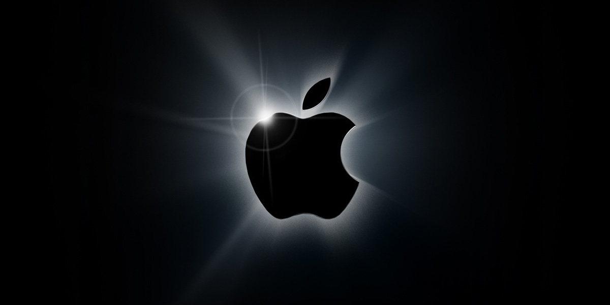

Agentum-энциклопедия
С момента основания в 1976 году, Apple стала одним из лидеров в индустрии технологий, выпуская уникальные и инновационные гаджеты, которые меняют нашу жизнь. На этой странице я расскажу вам об эволюции продуктов Apple, начиная с первого компьютера Apple I и заканчивая последними моделями iPhone, iPad, MacBook и др.
Я рассматрю каждый этап развития, отмечая значительные изменения в дизайне, технологиях и функциональности устройств. Вы узнаете, как Apple постоянно совершенствует свои продукты, создавая уникальный опыт для пользователей.
Данный сайт представляет непосредственную ценность для вас, клиентов. Во-первых, этот сайт предоставляет возможность более подробно узнать о продуктах Apple и их истории, что позволяет пользователям лучше понять философию и ценности компании.
Кроме того, знание о том, как продукция Apple развивалась со временем, может помочь клиентам сделать более информированный выбор при покупке новых устройств. Они могут увидеть, какие инновации были внедрены в более поздние модели, посмотреть на развитие дизайна и функциональности устройств.
В общем и целом, этот сайт предоставляет интересный и информативный контент, обогащающий знания и интересы клиентов в области технологий, истории и дизайна.
На данный момент готова только страница по iPhone. Однако в скором будущем появятся и страницы по другим устройствам, которые представлены в боковом меню.
Присоединяйтесь к нам, чтобы узнать больше о захватывающей истории Apple и проникнуться величием и инновациями, которые она принесла в мир технологий.пасхалка